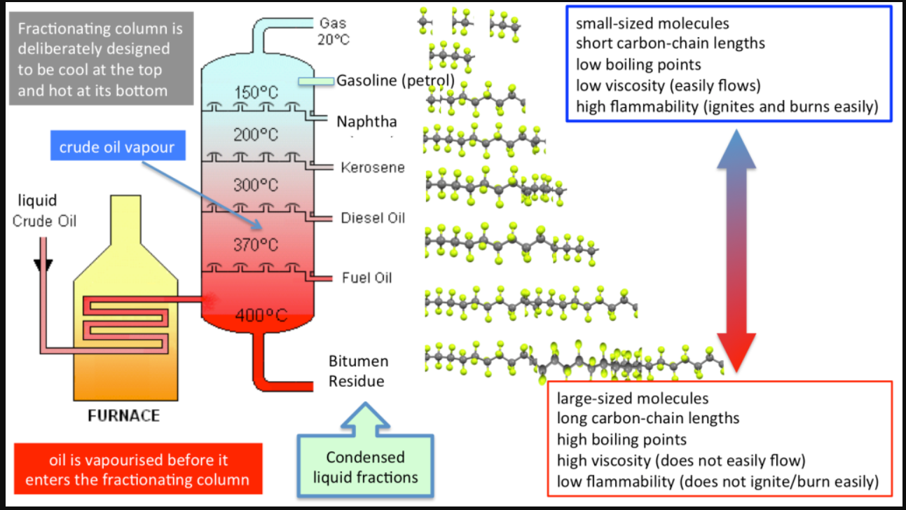

My Notes
Fractional Distillation
Fractional distillation involves heating crude oil in a fractional distillation column, which is a tall vertical tower with multiple trays or plates. As the crude oil is heated, it vaporizes, and its components rise up the column. Each component condenses at different heights in the column based on its boiling point, with the lighter fractions condensing at the top and the heavier ones at the bottom. The fractions are then collected separately. Following are few process parameters which are crucial during distillation operations
Pre-treatment and Properties of Crude Oil
-
Before crude oil can undergo fractional distillation, it often requires pretreatment to remove impurities and improve its suitability for refining.
-
Crude oil with API gravity above 30° is preferred for its lighter nature, which yields higher proportions of valuable light products like gasoline and diesel. For instance, crude oils with API gravities ranging from 30° to 45° are considered light crude oils.
-
Crude oil with sulfur content below 0.5% by weight is desirable to minimize emissions of sulfur oxides (SOx) during refining and combustion. Ultra-low sulfur crude oils, with sulfur content below 0.1%, are particularly sought after for meeting stringent environmental regulations.
-
Crude oil viscosity below 10 cSt (centistokes) at reservoir conditions is preferred for ease of transportation and refining. For example, crude oils with viscosities ranging from 2 to 10 cSt at reservoir temperature and pressure are considered low-viscosity crude oils.
Pretreatment Processes
- Desalting: Crude oil often contains salts, water, and other impurities, which can cause corrosion and fouling in refinery equipment. Desalting involves mixing the crude oil with water to dissolve the salts, followed by separation to remove the water and salt mixture.
- Dehydration: Water present in crude oil can cause operational issues and corrosion in refining equipment. Dehydration processes, such as heating and centrifugation, are used to remove water from crude oil.
- Desulfurization: Sulfur compounds in crude oil can contribute to air pollution and corrode refining equipment. Desulfurization processes, such as hydrodesulfurization, remove sulfur compounds to meet environmental regulations and improve product quality.
- Fractionation: Some refineries may perform initial fractionation or stabilization of crude oil to separate it into lighter and heavier fractions before entering the main distillation unit. This process can help optimize the distillation process and improve the quality of the final products.
Fractional Distillation of Crude Oil Yields
- Natural Gas: Recovered at the top of the column, primarily consisting of methane and ethane. Temperature Range: < 30°C Compounds: Primarily consists of methane (CH₄) and ethane (C₂H₆).
- Liquefied Petroleum Gas (LPG): Collected slightly below natural gas, consisting of propane and butane. Temperature Range: 30°C - 40°C Compounds: Predominantly propane (C₃H₈) and butane (C₄H₁₀).
- Naphtha: Used as a feedstock for petrochemical processes such as making plastics and synthetic fibers. Temperature Range: 40°C - 200°C Compounds: Typically contains hydrocarbons ranging from C₅ to C₁₀, including both straight-chain and branched alkanes, and sometimes aromatic compounds.
- Gasoline: Collected from the midsection of the column, used as fuel for automobiles. Temperature Range: 120°C - 200°C Compounds: Comprises hydrocarbons with carbon chain lengths typically ranging from C₆ to C₁₂, including both straight-chain and branched alkanes, as well as some aromatic compounds.
- Kerosene: Used for heating and jet fuel. Temperature Range: 175°C - 275°C Compounds: Mainly consists of alkanes with carbon chain lengths ranging from C₉ to C₁₅, along with some aromatic compounds.
- Diesel: Heavier than gasoline, used as fuel for diesel engines. Contains predominantly alkanes with carbon chain lengths ranging from C₁₀ to C₂₀, along with some aromatic compounds.
- Heavy Fuel Oil: Collected from the bottom of the column, used in industrial boilers and ships. Temperature Range: > 350°C Compounds: Consists of long-chain alkanes and aromatic compounds, with carbon chain lengths typically exceeding C₂₀.
 Fractional Distillation Process
Vacuum Distillation
-
Vacuum distillation is a variation of fractional distillation used in the refining of petroleum and other substances with high boiling points or thermal degradation concerns. As vaccum in turn reduces the boiling points of the substances in the column, this helps to fractionate the distillates at a lower temperature.
Process
- In vacuum distillation, the atmospheric pressure within the distillation column is reduced below atmospheric pressure using vacuum pumps. This lowers the boiling points of the components in the feedstock, allowing for separation at lower temperatures, which helps prevent thermal decomposition of sensitive compounds.
Advantages
- Lower Operating Temperatures: Vacuum distillation allows for separation at lower temperatures compared to atmospheric distillation, reducing the risk of thermal degradation and improving energy efficiency.
- Increased Yield of Lighter Fractions: By operating at lower pressures, vacuum distillation can increase the yield of valuable lighter fractions from heavy feedstocks.
- Improved Product Quality: Vacuum distillation can produce higher-quality products by minimizing thermal cracking and reducing the concentration of undesirable compounds like sulfur and nitrogen.
Limitations
- Equipment Complexity: Vacuum distillation units require specialized equipment such as vacuum pumps and vacuum towers, which can be costly to install and maintain.
- Increased Energy Consumption: While vacuum distillation operates at lower temperatures, it requires energy-intensive vacuum pumps to maintain reduced pressure within the distillation column.
- Product Specificity: Vacuum distillation is most effective for separating high-boiling components, so it may not be suitable for all types of feedstocks or refining objectives.